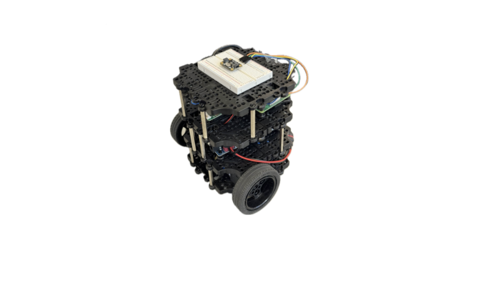

🔗 https://arxiv.org/pdf/2403.16294



Affiliation 🧪:
Extremum Source Seeking Control Lab — Undergraduate Research Assistant under Prof. Miroslav Krstić & Prof. Mamadou Diagne (UC San Diego)
Overview 🔍:
To validate control theory, we built a physical experiment comparing a PhD student’s (Cemal Tugrul Yilmaz)
Unbiased Extremum Seeking Control (uESC) with classical ESC on a TurtleBot3 Burger.
Using ROS 2, we implemented both controllers and logged motion using OpenCV-based tracking.
Hardware limits (wheel dynamics, sensor noise) produced less-smooth paths than ideal, but convergence behavior could be clearly contrasted.
My Role 🛠️:
Assembled and integrated the TurtleBot3 platform; implemented ROS 2 nodes for the feedback control loop and data logging;
created an OpenCV pipeline to track robot position and plot trajectories through video feedback.
Solution Summary 💡:
Built a proof-of-concept on TurtleBot3 applying unbiased extremum seeking control (uESC) versus classical ESC.
ROS 2 nodes (Python) generated wheel commands from sensor inputs, while OpenCV motion tracking quantified trajectories with ~90% accuracy.
Technical Highlights 🔧:
Results / Key Outcomes 🏁:
Demo Videos 📽️:
Unbiased Extremum Seeking (uESC)
Classical Extremum Seeking (ESC)
OpenCV Tracking 🎯